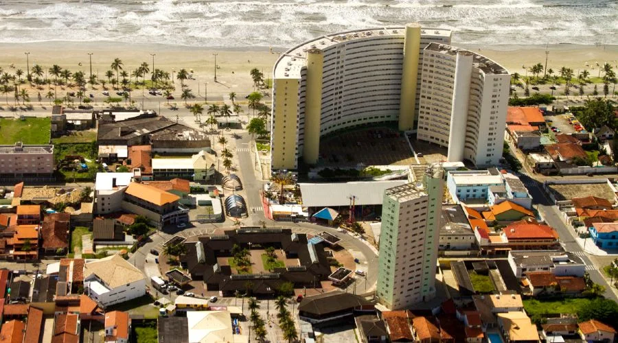

Infraestrutura completaPeruíbe · SP
Centro
Praticidade, infraestrutura completa e localização privilegiada — comércio, serviços e lazer em uma das regiões mais valorizadas da cidade. Ideal para quem busca comodidade e qualidade de vida.